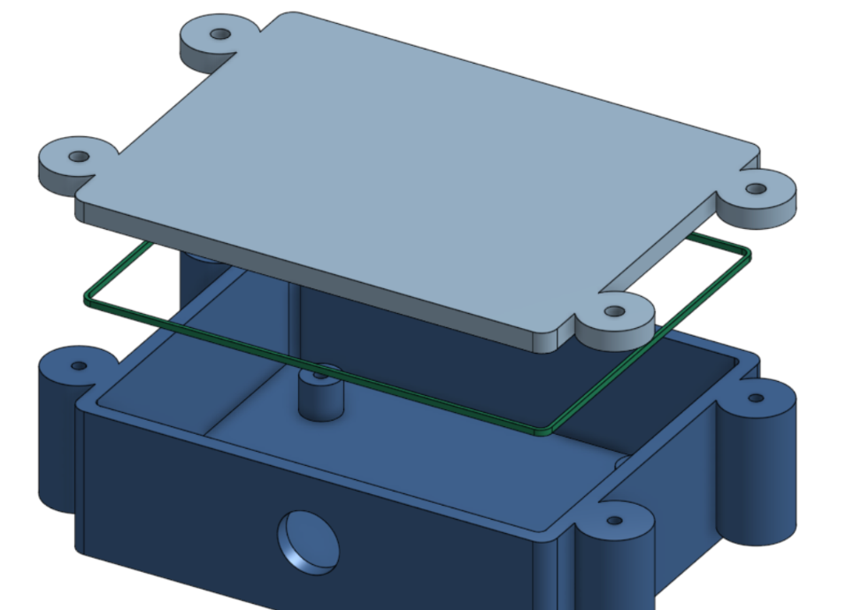

Custom CAD for functional 3D-printed parts.
Enclosures, mounts, replacement parts and STL/STEP edits. Send a photo, sketch, dimensions or existing CAD file.
Simple edits from $20 · Quoted per job · STEP / STL delivery
Sealable electronics enclosure · 70 × 50 mm PCB
Original engineering CAD prototype — inspect it in Onshape or download the STEP solids.

Designed for a nominal 70 × 50 mm PCB, with four board standoffs, a screw-fastened lid, perimeter gasket channel and a cable-entry opening.
CAD concept, not physically tested. Sealing, fit of purchased hardware and any IP rating have not been validated. Imported STEP geometry is editable B-rep but does not include an Onshape feature history.
What we design
Frequently asked questions
Can you modify an existing STL or STEP file?
Yes. Typical jobs include changing dimensions, holes, walls, clearances, mounting features, splits and other straightforward functional geometry. If an STL is too coarse or the change needs clean parametric geometry, we may rebuild the part instead of forcing a mesh edit. See how we decide.
Can you make a 3D-printable replacement part from photos?
Yes, when the fit-critical geometry can be measured. Several clear photos plus key dimensions are enough for many brackets, covers, spacers, clips, holders and similar functional parts. See the photo and measurement guide.
What dimensions do I need to send?
Start with the dimensions that control fit: hole diameters and spacing, mating sizes, overall envelope, thickness, offsets, clearances and any surface that must align with another part. If a critical dimension is missing, we will ask for it before the geometry is finalized.
How much does a simple CAD modification cost?
Simple CAD edits can start from $20. The actual quote depends on the source file, geometry, missing information and whether a clean rebuild is needed. Scope, price and turnaround are confirmed before work starts.
Tell us what you need.
Describe the part and attach a reference if available. We review the brief and confirm price and scope before starting.
No payment required to request a quote.
Explore CAD services and guides
More details about common projects and preparing files.